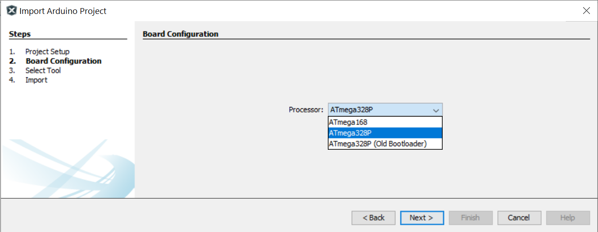
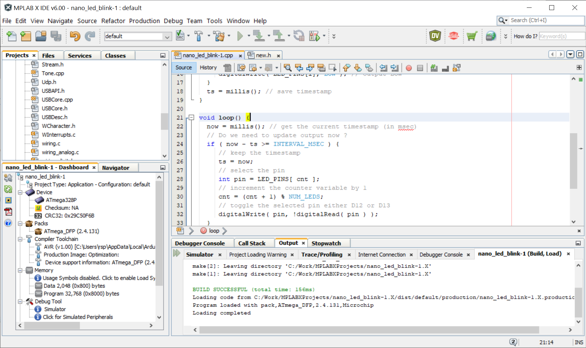

การนำเข้า Arduino Sketch สำหรับ AVR โดยใช้ซอฟต์แวร์ MPLAB-X IDE#
Keywords: Atmel/Microchip AVR MCUs, ATmega328P, MPLAB-X IDE, Arduino Sketch
▷ MPLAB-IDE & Arduino Import Plug-In#
บทความนี้ นำเสนอขั้นตอนการติดตั้ง Arduino Import Plugin สำหรับซอฟต์แวร์ Microchip MPLAB-X IDE (v6.00) และทดลองนำเข้าตัวอย่างไฟล์ Arduino Sketch สำหรับบอร์ด Arduino Nano (ATmega328P) เพื่อนำมาเขียนโค้ดภาษา C/C++ และจำลองการทำงานหรือดีบักโค้ดด้วย Simulator
ขั้นตอนการนำเข้า Arduino Sketch เพื่อใช้งานร่วมกับ MPLAB-X IDE มีดังนี้
- ติดตั้ง Arduino Import Plug-in สำหรับ MPLAB-X IDE
- นำเข้า Arduino Sketch ที่ได้เคยสร้างไว้ เพื่อสร้างเป็นโปรเจกต์ใหม่
- เลือก Arduino Platform ให้เป็น Arduino AVR Boards
- ระบุ Location หรือ Path ของ Arduino IDE (ทดลองใช้เวอร์ชัน 1.8.13)
- ระบุ Location หรือ Path ของ Arduino Core for AVR (เป็นเวอร์ชัน 1.8.4) ที่ได้ติดตั้งโดย Arduino IDE เอาไว้พร้อมใช้งานแล้ว
- ระบุไดเรกทอรีสำหรับสร้างโปรเจกต์ใหม่ (Projet Directory) และจบขั้นตอนการนำเข้าโปรเจกต์
▷ ตัวอย่าง Arduino Sketch#
โค้ดตัวอย่างสาธิตการทำให้ขา D11 และ D12 เป็นขาสำหรับเอาต์พุต-ดิจิทัล และมีการสลับสถานะลอจิก
ตามระยะเวลา (หน่วยเป็นมิลลิวินาที) ที่กำหนดไว้โดย INTERVAL_MSEC
ให้นำไปโค้ดตัวอย่างนี้ไปสร้างเป็น Arduino Sketch และคอมไพล์โค้ดโดยใช้ซอฟต์แวร์ Arduino IDE (ผู้ใช้จะต้องติดตั้งซอฟต์แวร์นี้ในเครื่องคอมพิวเตอร์)
#include <Arduino.h>
#define NUM_LEDS (2)
#define INTERVAL_MSEC (20)
// global constants / variables
const int LED_PINS[ NUM_LEDS ] = { 12, 13 }; // D12 and D13
uint32_t ts, now;
uint8_t cnt = 0;
void setup() {
for ( int i=0; i < NUM_LEDS; i++ ) { // configure output pins
pinMode( LED_PINS[i], OUTPUT ); // LED output
digitalWrite( LED_PINS[i], LOW ); // output LOW
}
ts = millis(); // save timestamp
}
void loop() {
now = millis(); // get the current timestamp (in msec)
// Do we need to update output now ?
if ( now - ts >= INTERVAL_MSEC ) {
// keep the timestamp
ts = now;
// select the pin
int pin = LED_PINS[ cnt ];
// increment the counter variable by 1
cnt = (cnt + 1) % NUM_LEDS;
// toggle the selected pin either D12 or D13
digitalWrite( pin, !digitalRead( pin ) );
}
}
รูป: ตัวอย่าง Arduino Sketch
โดยทั่วไปแล้ว เราจะใช้ซอฟต์แวร์ Arduino IDE สำหรับการเขียนโค้ด คอมไพล์ และอัปโหลดไปยังบอร์ด Arduino แต่ไม่สามารถดีบักการทำงานได้โดยใช้ตัวจำลองการทำงาน (Simulator) หรือ อุปกรณ์สำหรับการดีบักโค้ดในฮาร์ดแวร์
▷ การติดตั้ง Arduino Import Plugin#
เปิดโปรแกรม MPLAB-X IDE แล้วไปทำคำสั่งจากเมนู Tools > Plugins และจะปรากฎหน้าต่างใหม่ชื่อ Plugins ถัดไปให้กดปุ่ม Check for Updates แล้วจึงตรวจสอบดูรายการของ Plugins ที่สามารถดาวน์โหลดมาใช้งานได้
เลือก Arduino Import Plugin แล้วกดปุ่ม Install เพื่อทำขั้นตอนการติดตั้ง
รูป: ทำขั้นตอนติดตั้ง Arduino Import Plugin
รูป: แสดงรายการ Plugins ที่ได้มีการติดตั้งพร้อมใช้งานแล้วใน MPLAB-X IDE
▷ การนำเข้า Arduino Sketch#
ถัดไปเป็นขั้นตอนการนำเข้าไฟล์ Arduino Sketch (.ino) ที่มีอยู่แล้ว ให้ทำคำสั่งจากเมนู File > Import > Import Arduino Project
รูป: เริ่มขั้นตอนการนำเข้า Arduino Sketch
รูป: เลือก Arduino Sketch ที่ต้องการนำมาเข้าใน MPLAB-X IDE

รูป: เลือกไมโครคอนโทรลเลอร์เป็น ATmega328P สำหรับบอร์ด Arduino Nano v3.0
รูป: เลือก Hardware Tools ให้เป็น Simulator เพื่อใช้ในการดีบักโค้ด
รูป: เปิดไฟล์ .cpp ที่อยู่ใน Source ของโปรเจกต์ ซึ่งถูกสร้างมาจากไฟล์ .ino โดยอัตโนมัติ
ปัญหา: จากการทดลองใช้งาน (อ้างอิงเวอร์ชัน v1.8.3
ที่ได้ทดลองใช้งาน)
เมื่อคอมไพล์โค้ดในโปรเจกต์ จะพบปัญหาเกี่ยวกับคำสั่ง #include "new"
ในไฟล์ new.h
แต่ก็มีวิธีการแก้ไขดังนี้
- ให้แก้ไขจากเดิม
#include "new"ให้เป็น#include "new.h" - ให้แก้ไขไฟล์
new.hที่มีอยู่ใน "Imported Core" ให้มีเนื้อหาภายในเหมือนกับไฟล์new
จากนั้นจึงทำขั้นตอน Build Project

รูป: ทำขั้นตอนจากเมนู Production > Build Project ... เพื่อคอมไพล์โค้ดที่ได้นำเข้าจาก Arduino Sketch
รูป: กำหนดตำแหน่งของ Breakpoint (เช่น บรรทัดที่ 32 ในรูปตัวอย่าง) ก่อนเข้าสู่ Debug Session
ในระหว่างการดีบักโค้ด ผู้ใช้สามารถเพิ่มรายการติดตาม (ในหน้าต่าง Watches) เพื่อดูการเปลี่ยนแปลงค่าของตัวแปร (Global Symbols หรือ SFRs) ในโปรเจกต์ได้
รูป: ตัวอย่างการตั้งค่า Oscillator Options สำหรับ Simulator
รูป: เมนูคำสั่งที่เกี่ยวข้องกับการดีบัก เช่น Continue เพื่อรันโค้ดต่อไป หลังจากถูกหยุดไว้ชั่วคราวเมื่อทำคำสั่งมาถึง Breakpoint
▷ การนำเข้า Arduino Sketch ที่ใช้ไลบรารี FreeRTOS#
ตัวอย่างถัดไป สาธิตการนำเข้า Arduino Sketch ที่มีการใช้งานไลบรารี FreeRTOS ดังต่อไปนี้
// include the FreeRTOS library for AVR
#include <Arduino_FreeRTOS.h>
#define NUM_LEDS (4)
const int LED_PINS[ NUM_LEDS ] = { 5, 6, 7, 8 };
void task( void *pvParameters ); // task entry function
void setup() {
for ( int i=0; i < NUM_LEDS; i++ ) {
pinMode( LED_PINS[i], OUTPUT ); // configure output pins
digitalWrite( LED_PINS[i], LOW ); // LED output LOW
}
// create a new task
xTaskCreate( task, "Task", 128, NULL, tskIDLE_PRIORITY+1, NULL );
// Note the task scheduler is started automatically.
}
void loop() {
/* empty */
}
void task( void *pvParameters ) { // task-entry function
uint8_t cnt = 0; // a counter variable, increment by 1
while(1) {
int pin = LED_PINS[ cnt ];
digitalWrite( pin, LOW ); // turn the current LED off
cnt = (cnt+1) % NUM_LEDS;
pin = LED_PINS[ cnt ];
digitalWrite( pin, HIGH ); // turn the next LED on
vTaskDelay( pdMS_TO_TICKS(1000) );
}
}
ทำขั้นตอนเหมือนเดิม แต่เปลี่ยน Arduino Sketch ที่จะนำเข้าในตัวอย่างนี้
รูป: การนำเข้าและจำลองการทำงาน (ดีบัก) Arduino Sketch ที่มีการใช้คำสั่งจากไลบรารี FreeRTOS
▷ การเรียกใช้คำสั่งภายนอกเพื่ออัปโหลดไฟล์ไปยังบอร์ด Arduino#
หากต้องการจะอัปโหลดไฟล์ .hex ที่ได้จากการคอมไพล์โค้ด ไปยังบอร์ด Arduino (เช่น Arduino Nano ในตัวอย่างนี้) ก็มีวิธีการดังนี้
1) ให้สร้างไฟล์ชื่อ nano_programmer.bat ให้มีคำสั่งต่อไปนี้ (เรียกใช้คำสั่ง avrdude ของ Arduino Tools) แล้วบันทึกไฟล์
@echo OFF
set ARDUINO_TOOLS_PATH="C:\Users\%USERNAME%\AppData\Local\Arduino15\packages\arduino\tools"
%ARDUINO_TOOLS_PATH%\avrdude\6.3.0-arduino17\bin\avrdude.exe ^
-C%ARDUINO_TOOLS_PATH%\avrdude\6.3.0-arduino17\etc\avrdude.conf ^
-v -patmega328p -carduino -P%1 -b115200 -D -Uflash:w:%2:i
2) กลับไปยังโปรเจกต์ที่ได้สร้างไว้ใน MPLAB-X IDE แล้วให้ไปที่
File > Project Properties > Conf: [default] > Building
และกดเลือก Check Box:
Execute the line after build เขียนคำสั่งที่ต้องการทำในช่องบรรทัดถัดไป
(เรียกใช้ไฟล์ nano_programmer.bat)
ในรูปตัวอย่างได้เลือกใช้พอร์ตอนุกรมหมายเลข COM9 (อาจเป็นหมายเลขอื่นและขึ้นอยู่กับคอมพิวเตอร์ที่กำลังใช้งาน)
รูป: การตั้งค่าเพื่อให้ทำคำสั่งเพิ่มหลังจากทำขั้นตอน Build Project ได้สำเร็จ
รูป: เมื่อทำขั้นตอน Build Project จะมีการอัปโหลดไฟล์ .hex ไปยังบอร์ดโดยอัตโนมัติ
▷ กล่าวสรุป#
ผู้ใช้สามารถนำเข้า Arduino Sketch (ไฟล์ .ino) เพื่อนำมาเขียนโค้ด คอมไพล์ และดีบักการทำงานของโค้ด โดยใช้ซอฟต์แวร์ Microchip MPLAB-X IDE
This work is licensed under a Creative Commons Attribution-ShareAlike 4.0 International License.
Created: 2022-01-27 | Last Updated: 2022-01-28